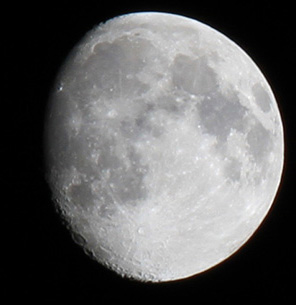

New Moon Rising
To go places and do things that have never been done before – that’s what living is all about. NASA is not about the ‘Adventure of Human Space Exploration’…We won’t be doing it just to get out there in space – we’ll be doing it because the things we learn out there will be making life better for a lot of people who won’t be able to go.
Never in all their history have men been able truly to conceive of the world as one: a single sphere, a globe, having the qualities of a globe, a round earth in which all the directions eventually meet, in which there is no center because every point, or none, is center — an equal earth which all men occupy as equals. The airman's earth, if free men make it, will be truly round: a globe in practice, not in theory.
Blue Moon
A Chinese tale tells of some men sent to harm a young girl who, upon seeing her beauty, become her protectors rather than her violators. That's how I felt seeing the Earth for the first time. I could not help but love and cherish her. If you could see the earth illuminated when you were in a place as dark as night, it would look to you more splendid than the moon.
If you could see the earth illuminated when you were in a place as dark as night, it would look to you more splendid than the moon. When I orbited the Earth in a spaceship, I saw for the first time how beautiful our planet is. Mankind, let us preserve and increase this beauty, and not destroy it!
We want to explore. We’re curious people. Look back over history, people have put their lives at stake to go out and explore … We believe in what we’re doing. Now it’s time to go.
The regret on our side is, they used to say years ago, we are reading about you in science class. Now they say, we are reading about you in history class.